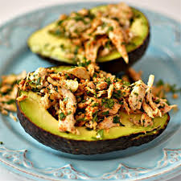

Mexi-Chicken Avocado Cups

A Mexican-style side dish made of chicken and avocado, no cooking required. It's a quick, healthy, and delicious recipe guaranteed to make you feel and look good.
Ingredients
- 3 (6 ounce) cans canned chicken, drained
- 1 tablespoon cilantro, finely chopped
- ½ teaspoon chili powder, or more to taste
- 3 avocados, halved lengthwise and pitted
- 1 teaspoon lime juice, or to taste
Instructions
- Stir chicken, cilantro, and chili powder together in a bowl.
- Arrange avocado halves on serving dish and brush with lime juice. Spoon chicken mixture into avocado halves.